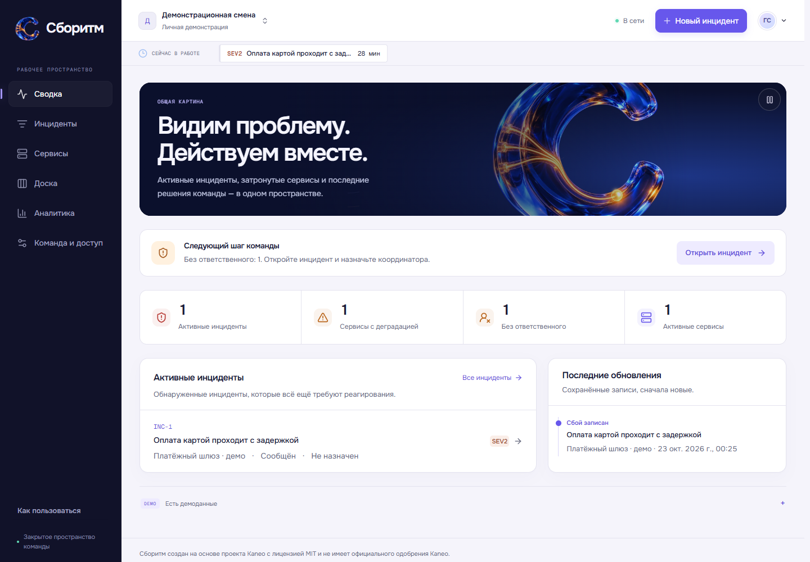
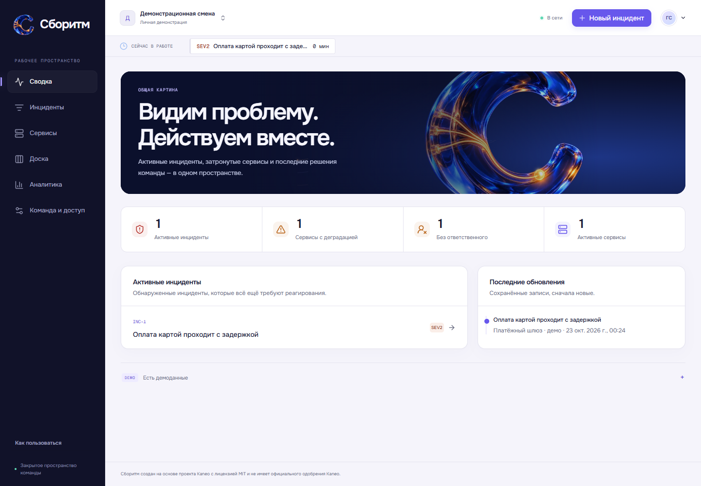
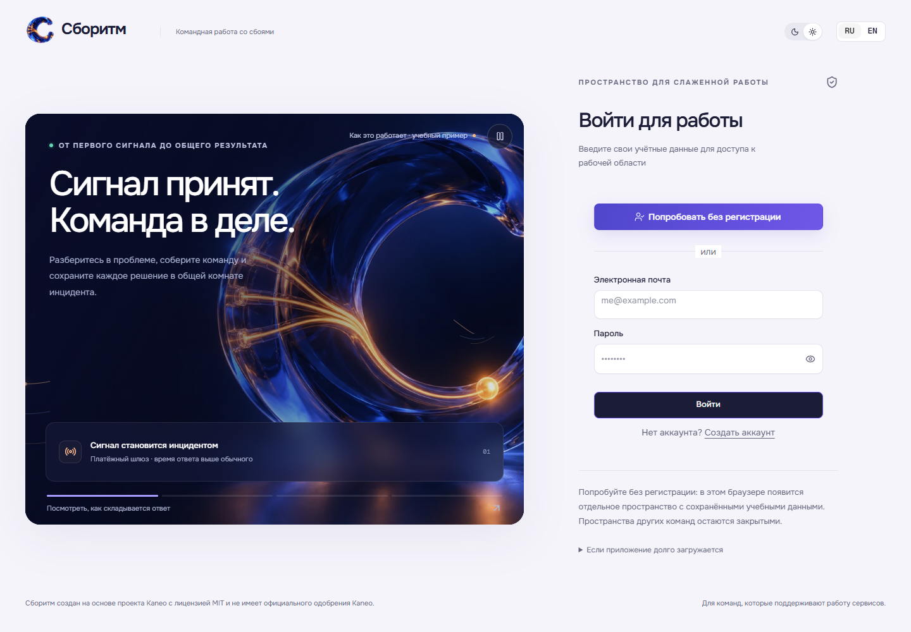
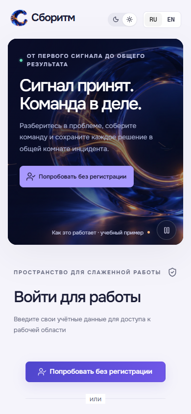
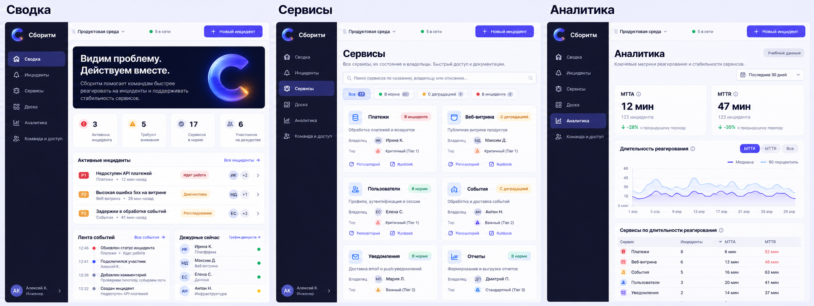
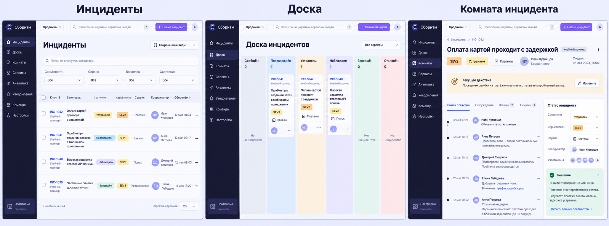
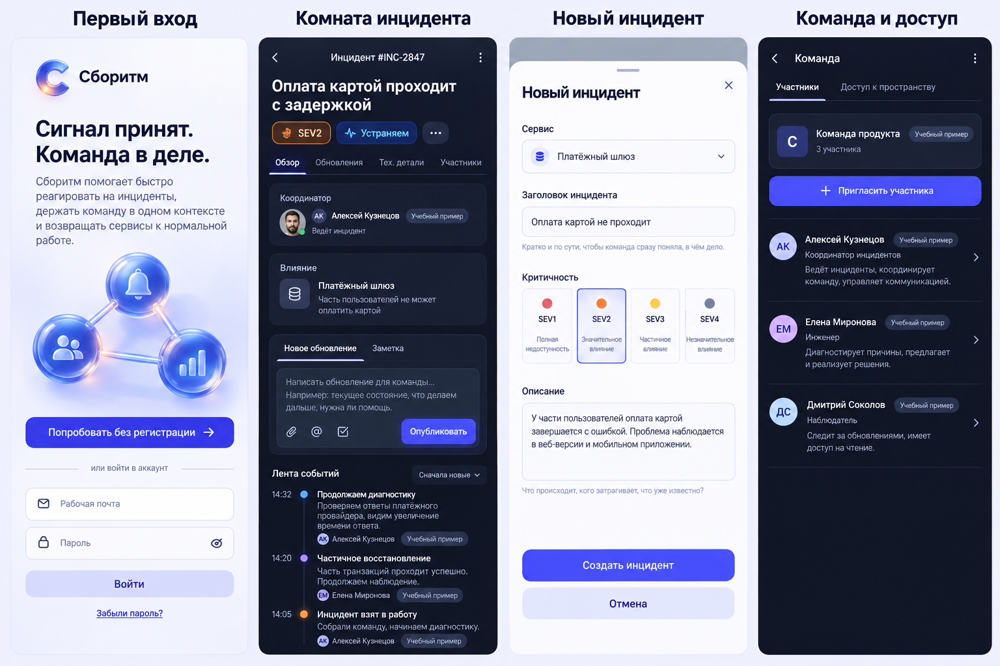

Следующий шаг заметнее
Сводка выделяет инцидент, который требует внимания, и показывает контекст рядом с проблемой.
Работающий интерфейс · 23 октября 2026
Сборитм помогает команде понять сбой, назначить ответственного и довести инцидент до результата. Здесь — реальные изменения интерфейса и то, что ещё можно улучшить.

Сравнение реализации
Одинаковые рабочие экраны до и после полировки. Сравните читаемость, иерархию и то, насколько легко найти следующее действие.
Изображение открывается в полном размере.

Сводка выделяет инцидент, который требует внимания, и показывает контекст рядом с проблемой.
Крупнее подписи, поля, статусы и области нажатия. Карточки сервисов складываются в единую адаптивную сетку.
Навигация не перемонтирует рабочую область ради эффекта. Короткие переходы сопровождают действие.
Галерея рабочих экранов
Выберите раздел, тему и размер. Здесь используются актуальные снимки реализации, а не изображения сгенерированного интерфейса.
Активные инциденты, внимание команды и последние обновления.
Учебные данные отмечены DEMO. Светлая и тёмная темы проверены отдельно; мобильный снимок сделан при ширине 390 px.
Открыть полный снимок ↗Продукт объясняет своё назначение до входа. Кнопка «Попробовать без регистрации» открывает отдельное пространство с сохранёнными учебными данными.


Движение в реализации
В видео — работающий интерфейс. Короткие переходы помогают следить за действием, а декоративную сцену можно остановить. При уменьшенном движении сохраняется понятная обратная связь.
Навигация
Переход между разделами не сбрасывает оболочку и не скрывает всю рабочую область. Изменение фильтра не запускает появление страницы заново.
Состояние и результат
Раскрытие контекста, назначение ответственного, новая запись в истории и сохранённый результат заметны рядом с изменившимся объектом.
Контроль движения
Объясняющая сцена плавно меняет этапы, поддерживает ручной выбор и паузу. Вне экрана и скрытой вкладке её движение останавливается.
Сгенерированные ориентиры
Эти изображения помогают сравнить композицию, иерархию, цвет и материалы. Реализованные экраны и реальные данные показаны в галерее выше.
Это сгенерированные референсы, а не снимки сайта. Они могут содержать неточный текст, примерные данные и элементы управления, которых пока нет в приложении. Наличие такого элемента в макете не означает, что функция реализована.

Референс композиции, читаемости и согласованности рабочих разделов.

Референс для контекста инцидента, действий команды и сохранённой истории.

Иерархия на узком экране, читаемые статусы и доступные действия. С реальной мобильной версией можно сравнить через переключатель «Телефон» выше.
Открыть концепт ↗Зафиксированные проверки
Матрица в установленном Google Chrome 155.0.8059.85: восемь рабочих экранов, семь ширин и две темы. Результаты доступны в исходном отчёте.
320360390768102414401920Проверка размеров в браузере подтверждает поведение в этих режимах. Она не заменяет испытания на физических телефонах, ручной проход со скринридером и проверку больших объёмов данных. Автоматические проверки доступности относятся к указанным в отчёте экранам и состояниям.
Локальная сборка открывает рабочий продукт. Сравнения, концепты и результаты проверок остаются на этой странице.